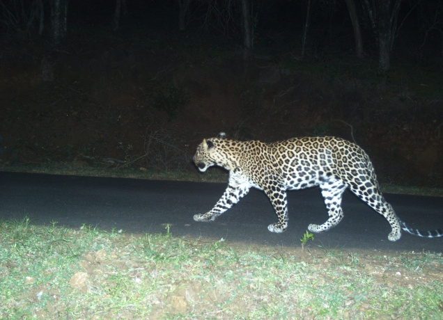
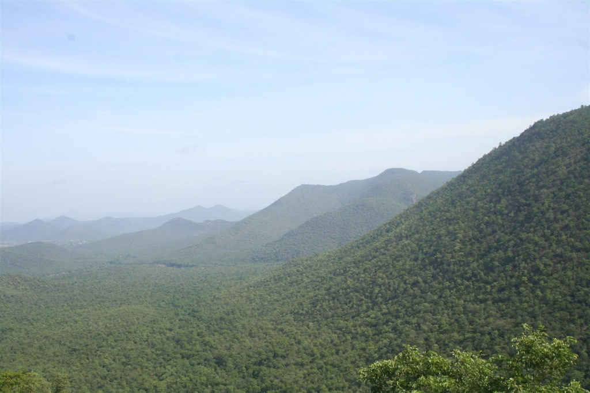
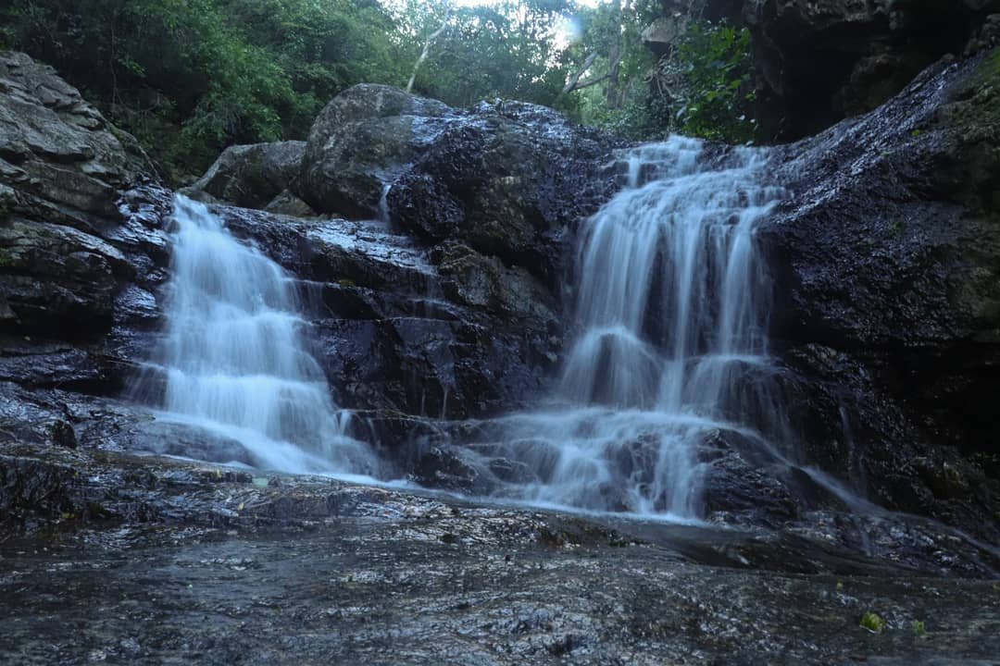

| Hasanur or Hassanur is a village in Thalavadi taluk, Erode district, Tamil Nadu, India. In 2011 it had an area of 1,066 hectares and a population of 4,454.[1] Hasanur village is in the forest of the same name[2][3] and is part of Sathyamangalam Wildlife Sanctuary.[4][5] Hasanur is connected to Chamarajanagar and Coimbatore by National Highway 948 (Old 209). There are a few private resorts within the village itself and in its vicinity. |
|
Bargur, a town in the Tamil Nadu state of India, is known for its scenic beauty and natural attractions, including waterfalls like Eratti Falls and Anthiyur Lake Waterfalls. Eratti Falls is a hidden gem located within a reserved forest, while Anthiyur Lake Waterfalls, dependent on rainfall in the Bargur Hills, offers a family-friendly spot for fun and recreation, especially during monsoon season. |

|

|
Kadambur Hills and the surrounding area, including Sathyamangalam, are known for several waterfalls, some of which are mentioned by name in the search results. These waterfalls are a part of the natural beauty of the region, offering a refreshing escape for visitors. |